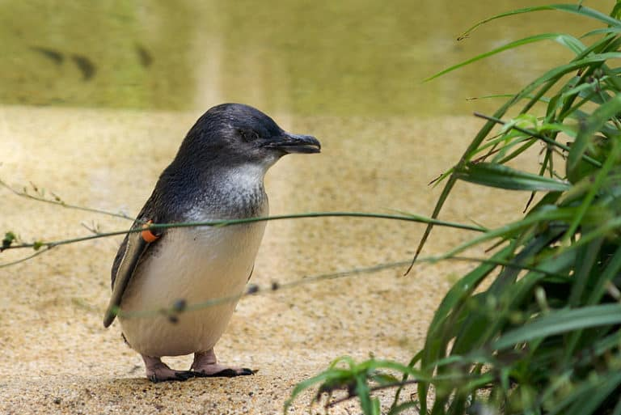

Nine Fascinating Little Penguin Facts
- Johann Reinhold Forster first described these animals in 1871.
- The little penguins around Summerland Beach on Phillip Island do nightly parades, and tourists come to watch.
- The University of Tasmania devotes considerable resources to little penguin fact-finding projects.
- Hunters valued fairy penguins for their skins and feathers in the 1800s and early 1900s.
- In days of old, shipwrecked sailors in the Antipodes ate these animals to survive.
- The eggs of these animals were once considered a delicacy, especially among Aboriginal Australians.
- The Linux penguin mascot was inspired by a little penguin who pecked the operating system’s creator during an Australian vacation.
- Scientists believe that some fairy penguin populations may occasionally share nesting colonies with seabirds, like prions and short-tailed shearwaters.
- Fishers once used fairy penguins to catch southern rock lobsters.
UC Little Penguin Conservation Group
11 Kirinari Street,
Bruce ACT 2617
02-6201-5111
11 Kirinari Street,
Bruce ACT 2617
02-6201-5111
Related Websites
- A to Z Animals a-z-animals.com
- Australia Birdlife birdlife.org.au
- Victoria State Government Wildlife Fact Sheet Little-Penguin.pdf